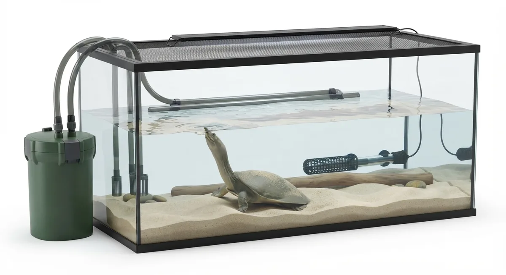
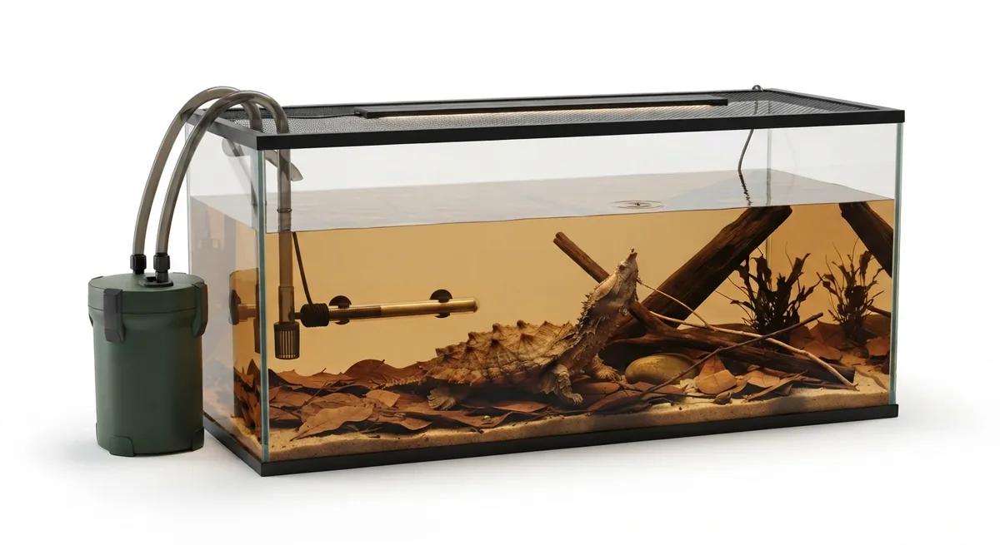

スパイニースッポンスッポンモドキシナスッポン
ヘビクビガメナガクビガメニシキマゲクビガメ
水底で待つ者と、横を向く者
スッポン類は水底の砂に身を埋め、鼻の穴だけを水面に向けながら、長い首を電光石火で伸ばして獲物を仕留めます。甲羅は骨ではなく皮膚に覆われた軟質——触れるだけで傷がつく繊細さです。一方、曲頸類はいわゆる普通のカメとは別の系統で、首を縦に畳む代わりに横にくねらせて甲羅の脇に収める独特の構造を持ちます。
見た目も生き方もまるで違う2グループを同じページに並べたのは、飼育の核心が重なっているからです。深い水、清潔な水質、そして「つかまない」取り扱い——この3点が、どちらの種にも共通して求められます。

AI生成の飼育環境イメージ図です。実際の設備・サイズ・配置は、種類や個体の大きさ、飼育環境によって異なります。配置の一例です。必要な機材・能力は飼育するカメや水槽サイズによって異なります。
水の深さが、彼らの暮らしを決める
スッポンは砂に潜った状態でも、首を伸ばして水面に届かなければなりません。水深の基準は「砂に潜ったまま首を伸ばすと鼻先が水面に届く深さ」——体の大きさに合わせて調整し、泳ぎの得意な種なので成体には泳げる水量も確保します。曲頸類も水深は充分に取るほうがよく、ジーベンロックナガクビガメのような大型種は90cm水槽を前提に考えてください。
- 砂底（スッポン必須）：細かい川砂を5〜10cm以上。角のある砂は腹甲を切るため使えません。大磯砂・サンゴ砂も同様。
- ろ過：大型肉食種の水汚れは想像以上です。外部または上部フィルターと、週1〜2回の水換えを組み合わせて水質を守ります。
- 水流：スッポンは強い流れを嫌います。フィルターの排水は壁や底砂に当てて拡散させるか、シャワーパイプを使ってください。
- 陸場：スッポンは砂の中で休むため使う頻度は低めですが、野生では砂州などで日光浴をする種も多く、上がれる場所は用意しておくのが安心です。曲頸類も種によって設けたほうがよいものがいます。
- UVB：補助的に照射します。陸場での日光浴が少ない種でも、UVBランプで代替できます。
⚠️ スッポンの首は、あなたが思うよりずっと長く届きます。持ち上げようとした瞬間、横から首が伸びてくる——これが咬傷の典型的なパターンです。スコップや専用トングを使い、素手での持ち上げは厳禁。フロリダスッポンはとくに攻撃的で、飼育年数が長い個体でも油断は禁物です。
対応種リスト
スッポン類（ソフトシェル）
スパイニースッポン
Apalone spinifera
上級
L（30〜50cm）
最も流通量の多いスッポン属。砂底必須・水流弱め。独特の柔らかい甲羅と素早い動きが魅力。取り扱いに注意。
スムーススッポン
Apalone mutica
上級
L（18〜35cm）
スパイニースッポンよりキールが目立たない滑らかな甲羅。同属の中では比較的温和な個体が多い。砂底・弱水流必須。
フロリダスッポン
Apalone ferox
上級
L（35〜60cm）
スッポン属最大種のひとつ。非常に攻撃的で飼育難度が高い。120cm以上の大型水槽が必須。本格経験者向け。
スッポンモドキ
Carettochelys insculpta
上級
XL（50〜70cm）
前肢がウミガメのようなヒレ状。ニューギニア・オーストラリア北部産。26〜30℃の高水温と150cm以上の大型水槽が必須。
スッポン（シナスッポン）
Pelodiscus sinensis
中〜上級
L（25〜35cm）
食用としても知られる東アジア産スッポン。国内流通が安定しており入手しやすい。砂底必須・噛みつき注意。
アルビノシナスッポン
Pelodiscus sinensis（アルビノ）
中〜上級
L（25〜35cm）
白〜クリーム色の体色が美しいシナスッポンのアルビノ。専門店で入荷確認済み。飼育方法は基本種と同じ。
曲頸類（ヘビクビ・ナガクビ・ヨコクビ）
ニシキマゲクビガメ（ピンクベリー）
Emydura subglobosa
中〜上級
M（18〜25cm）
腹甲がピンク色の美しい曲頸類。横に首を曲げて引っ込める独特の動作が魅力。曲頸類の入門種として人気が高い。
ヘビクビガメ
Chelodina longicollis
中〜上級
M（20〜28cm）
オーストラリア産の曲頸類。首が長く蛇のように素早く動く。甲羅に引っ込めず横に曲げる独特の防御行動が印象的。
アフリカヨコクビガメ
Pelomedusa subrufa
中〜上級
M（15〜25cm）
サハラ以南に広く分布する曲頸類。比較的安価で入手しやすい。水棲傾向が強く、横に首を曲げる行動が面白い。
ヒラリーカエルガメ
Phrynops hilarii
上級
L（30〜40cm）
南米産曲頸類で流通量が多く飼育もしやすい入門的曲頸種。下顎のヒゲ状突起がユーモラス。大型になるが水質への許容範囲が広い。
ニシキヘビクビガメ
Chelodina mccordi
上級
M（25〜30cm）
甲羅に美しい模様が入るロテ島（インドネシア）産の曲頸類。ヘビクビガメより稀少でCB流通は限られる。本格的な曲頸類コレクション向き。
ジーベンロックナガクビガメ
Chelodina rugosa
上級
L（25〜35cm）
オーストラリア北部産の大型曲頸類。水中生活が主体で90cm以上の大型水槽が必要。頑丈な甲羅と大きなサイズが特徴。
パーケリーナガクビガメ
Chelodina parkeri
上級
M（20〜25cm）
ナガクビガメ属の中で最も精悍な顔つきと評されるニューギニア産。EUCB流通あり。色抜け個体は非常に美しい。
スッポンモドキはスッポンではありません。名前が紛らわしいですが、スッポンモドキ（Carettochelys insculpta）はスッポン科とは別の独立した科の種。ピッグノーズタートルとも呼ばれ、前肢がウミガメ型のヒレ状です。砂潜りはせず、26〜30℃の高水温と150cm以上の大型水槽が必要で、植物質の餌も取ります。管理はスッポンとは別物と考えてください。
このガイドの対象種（16種）
このガイドで扱うスッポン類・曲頸類の種別ページです。
Apalone
Chelus
Carettochelys
Chelodina
Emydura
Pelodiscus
Pelomedusa
Pelusios
Phrynops
スッポン・曲頸を一覧で見る →

AI生成の飼育環境イメージ図です。実際の設備・サイズ・配置は、種類や個体の大きさ、飼育環境によって異なります。配置の一例です。必要な機材・能力は飼育するカメや水槽サイズによって異なります。
この暮らしから選ぶ飼育機材
スッポン・曲頸類に必要な機材を機材別ガイドで紹介しています